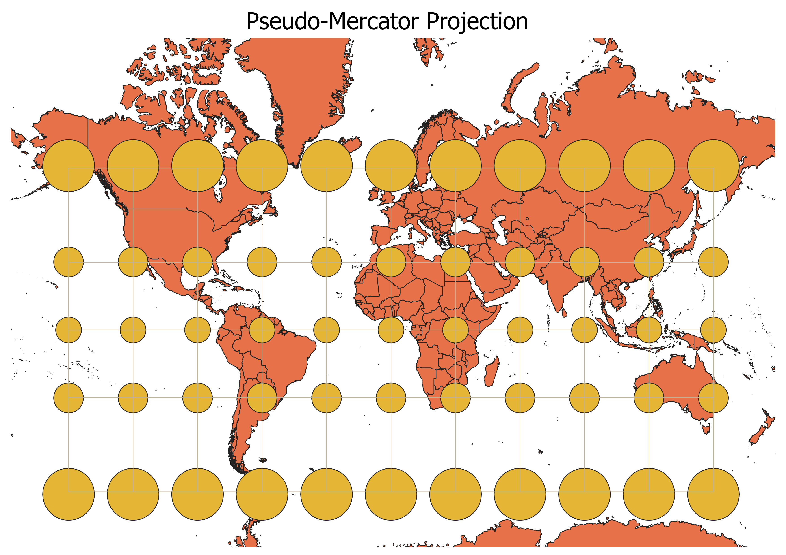
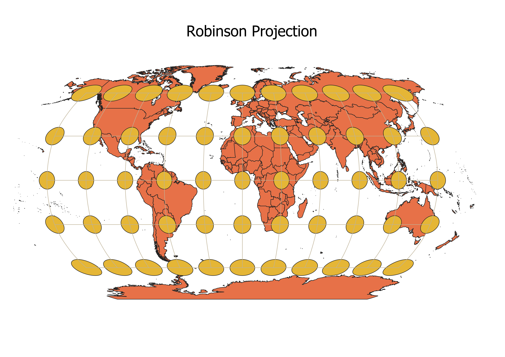
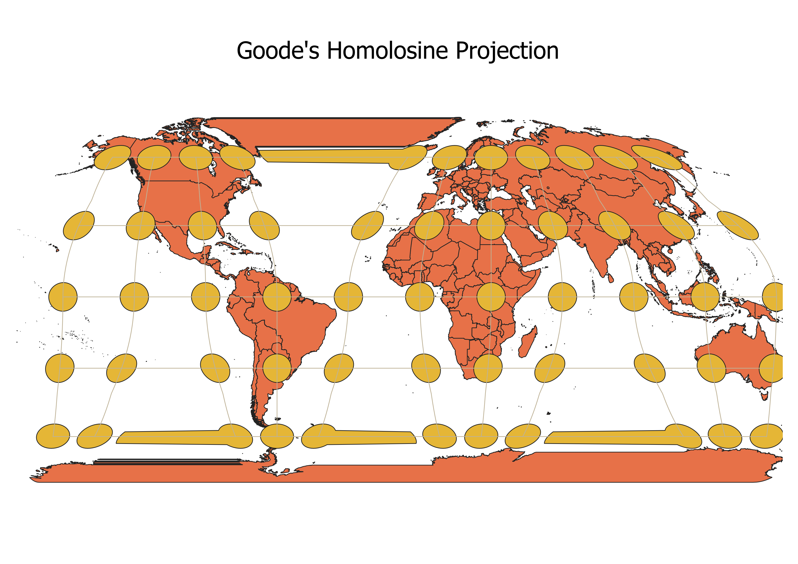
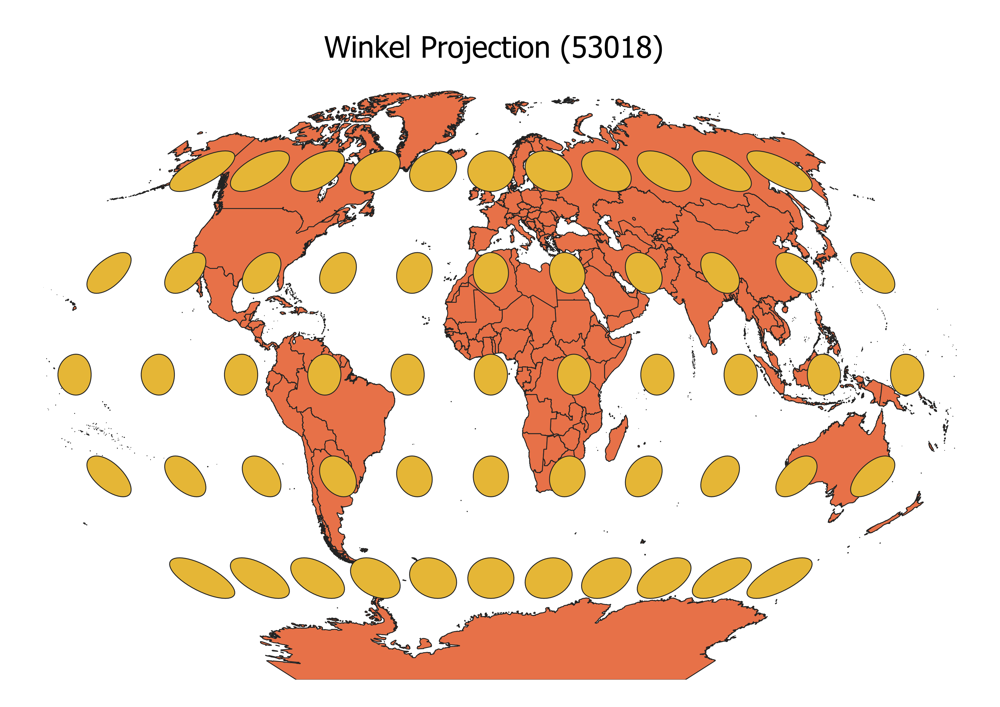
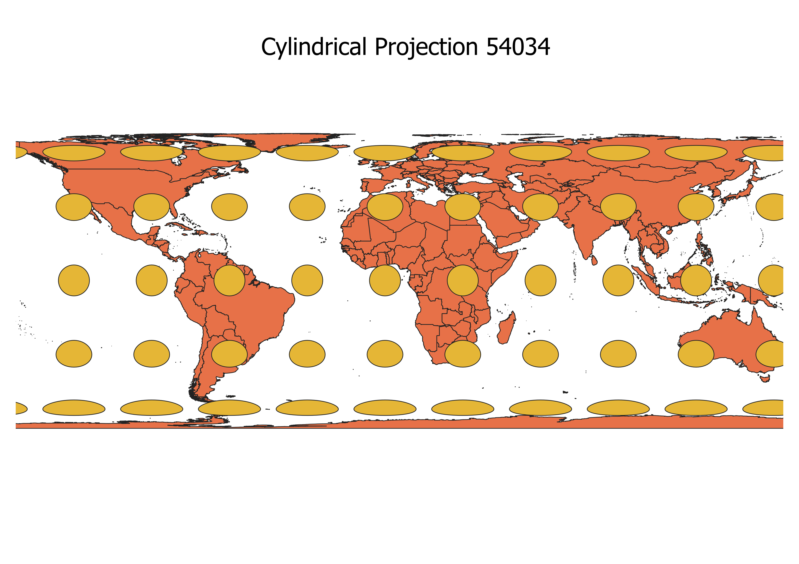
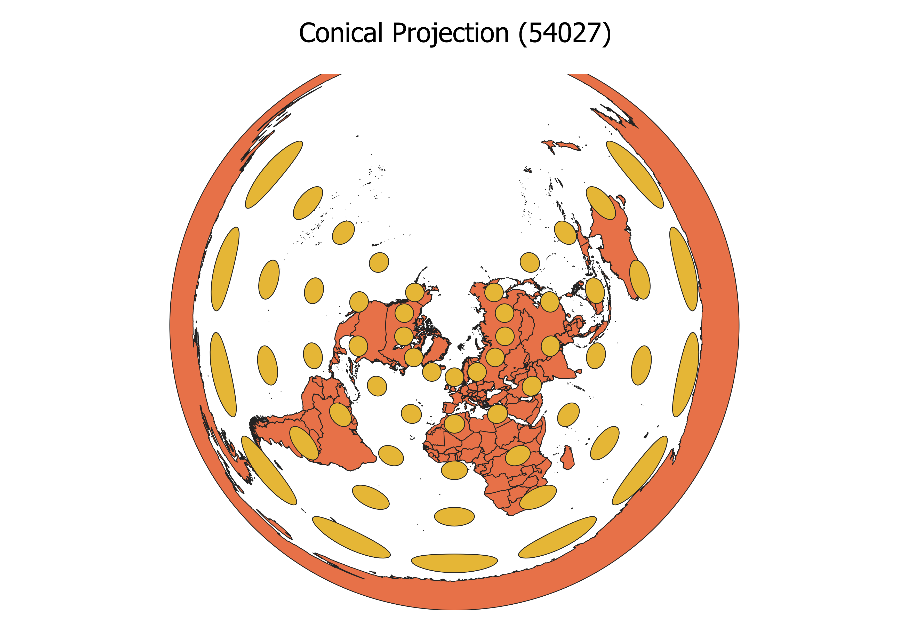
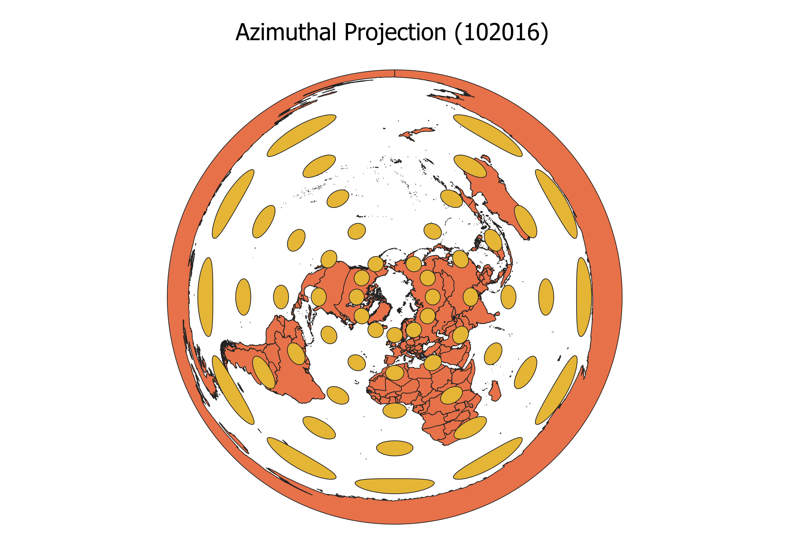
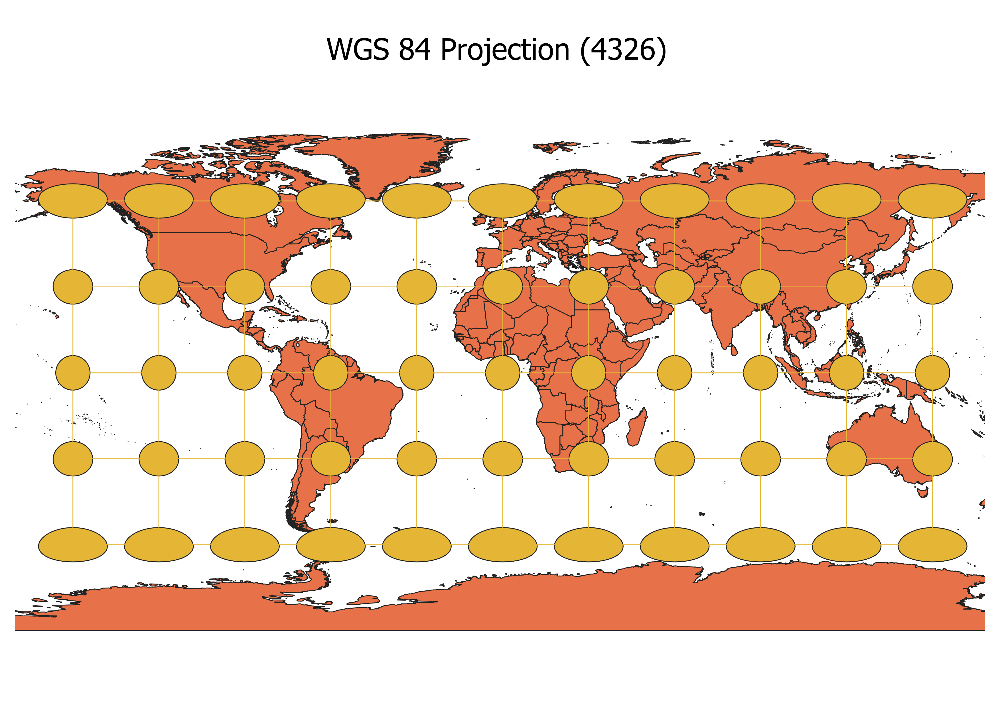
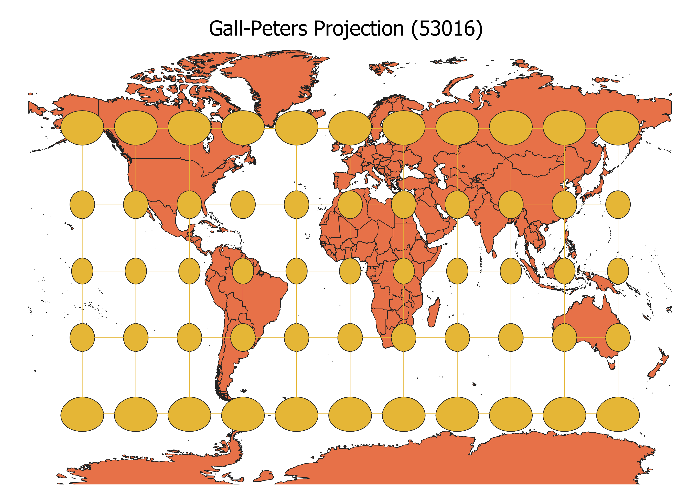

Homework 3 Assignment

Above is a Pseudo-Mercator map projection. The yellow dots on the map are the Tissot's indicatrix.
These circles demonstrate how well the map projection maintains the shape and area of an item on a map.
You can see in this map that the circles are all roughly the same circular shape. The closer these
shapes are to circles, the closer the land masses on the map are to their actual shape. It is evident
that the Pseudo-Mercator projection is maintaining the correct shapes of the land masses. However, you
also need to consider the size of the circles. The size of the circles represents the area of the
items on the map. We can see on this map that the circles increase closer to the poles. This means
that the land closer to the poles is portrayed as a larger area in this projection than it is in
real life. For example, Greenland and Russia are larger on this map in relation to other countries like
the US than they actually are in real life. In conclusion, the Pseudo-Mercator map is good to reference
to understand the shapes of continents and countries on a world map. However, by maintaining shape so well,
this map projection sacrifices an accurate view of continent and country size.

Above is a Robinson map projection. The Robinson map projection differs from the Mercator projection
because it finds a balance of maintaining both shape and size. It does not sacrifice one of those
attributes more than the other. In the center of the map, you can see that the indicatrix is made up
of roughly uniform oblong shapes. The shape is not perfectly a circle, indicating a slight distortion in the area/size
of the countinents and countries. Then, as you move closer to the poles, you can see that the size of the
indicatrix shapes slightly increase and the shapes becomes slightly more circular. This shape change indicates
a slight increase in area representation but a better shape representation near the poles. This distinction
in distortion between the middle and the edge of the map projection exemplifies the balance of maintaining
shape and area.

Above is a Goode's Homolosine map projection

Above is a Winkel map projection (projection 53018)

Above is a cylindrical map projection (projection 54034)

Above is a conic map projection (projection 54027)

Above is a azimuthal map projection (projection 102016)

Above is a WGS 84 map projection (projection 4326)

Above is a Gall-Peters map projection (projection 53016)
In Summary
I found these commonly used map projections in the project coordinate reference system (CRS) portion
on QGIS. Some of these projections were recommended and others were found using an online article naming the
top 10 world map projections (https://futuremaps.com/blogs/news/top-10-world-map-projections). As mentioned
in the paragraphs above, Tissot's Indicatrix was placed on top of each of these projections. These circles
demonstrate how well the map projection maintains the shape and area of an item on a map. The more distorted
the shape is from a circle, the less accurate the land mass shapes are in that portion of the map. The size of
the circles demonstrate how well the map projection portrays a land mass's area size. Varying circle sizes
mean variance of a land mass's area from the true area.